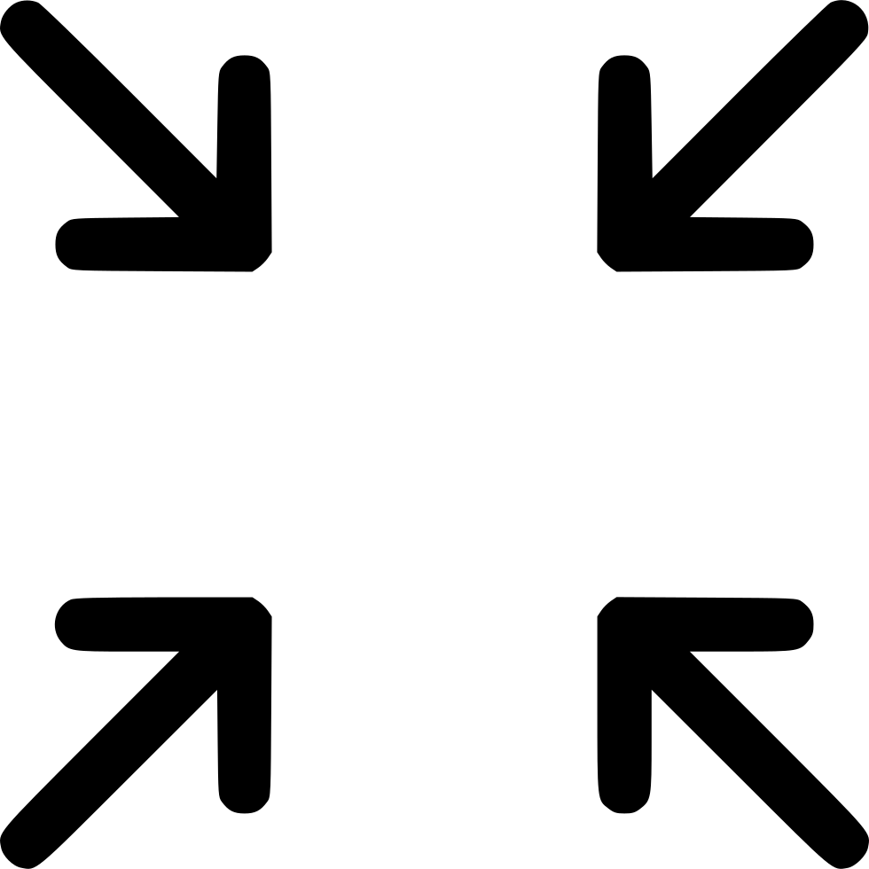

<video cdkDragBoundary=".example-boundary" cdkDrag [ngClass]="{
    'top-video': checkScale == true && topVideoFrame === 'my-video',
    'top-video-scale': checkScale == false && topVideoFrame === 'my-video',
    'main-video'   : checkScale == true && topVideoFrame != 'my-video',
    'main-video-scale' : checkScale == false && topVideoFrame != 'my-video'
  }" autoplay playsinline videoUser #videoUser (click)="swapVideo('my-video')">

</video>

<video cdkDragBoundary=".example-boundary" cdkDrag [ngClass]="{
  'top-video': checkScale == true && topVideoFrame === 'partner-video',
  'top-video-scale': checkScale == false && topVideoFrame=== 'partner-video',
  'main-video'   : checkScale == true && topVideoFrame != 'partner-video',
  'main-video-scale' : checkScale == false && topVideoFrame != 'partner-video'
  }" autoplay playsinline videoPartner #videoPartner (click)="swapVideo('partner-video')"></video>

<div [ngClass]="checkScale == true ? 'button_wrap' : 'button_wrap1'">
  <button (click)="closeModal()" [ngClass]="checkScale == true ? 'button-call' : 'button-call1'" *ngIf="isAnswerClick">
    
  </button>
  <button [ngClass]="checkScale == true ? 'button-send' : 'button-send1'" (click)="call()" *ngIf="!isAnswerClick">
    
  </button>
</div>

<div *ngIf="checkScale===false" class="button_scale" (click)="scaleTo()">
  
</div>
<div *ngIf="checkScale===true" class="button_scale" (click)="scaleTo()">
  
</div>